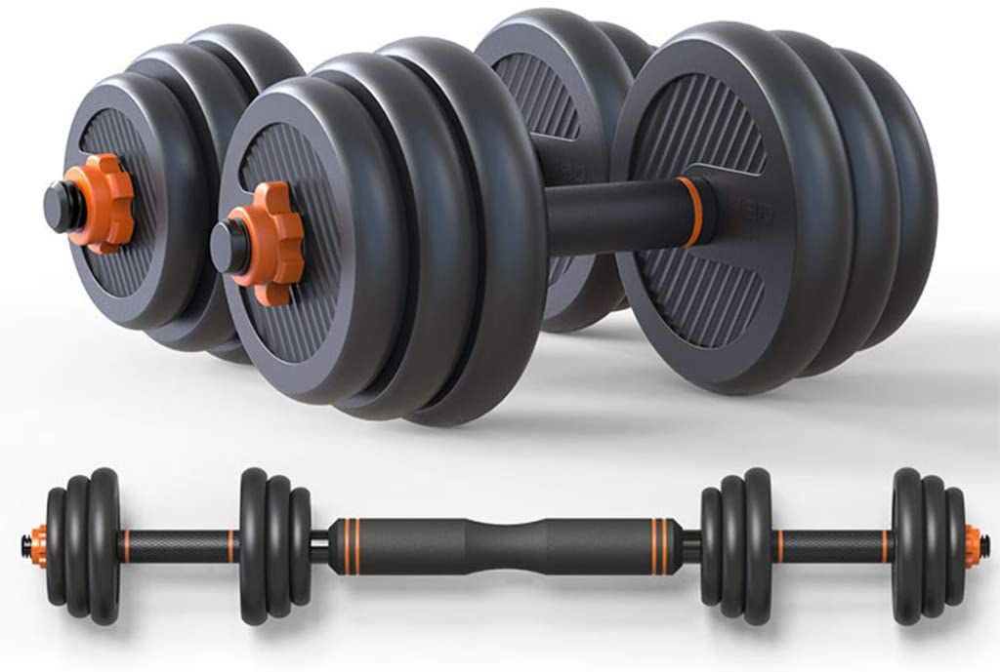

Pesas
El entrenamiento con pesas o entrenamiento con cargas es una manera habitual de ejercicio,
en el cual se usa la fuerza de gravedad (a través de los discos, las mancuernas,
las máquinas con polea y/o palancas) que se opone a la contracción muscular.
MXN 600.00

Maquina de dorsales
La dorsalera también es una máquina que involucra poleas y resulta
ampliamente usada en los gimnasios. Con ella podemos realizar
polea al pecho para trabajar la zona media de la espalda.
MXN 4,500.00

Bicicletas estáticas.
Una bicicleta estática o bicicleta fija es un aparato de gimnasio que simula el ejercicio de una bicicleta.
Hay varios tipos: Las convencionales o verticales.
MXN 3,500.00

Cintas de correr
Una cinta de correr, cinta ergométrica, caminadora de banda o máquina de caminar
es una máquina para entrenamiento físico que puede funcionar mediante
propulsión eléctrica o manual, y que sirve para correr o andar sin moverse de un mismo sitio.
MXN 10,800.00